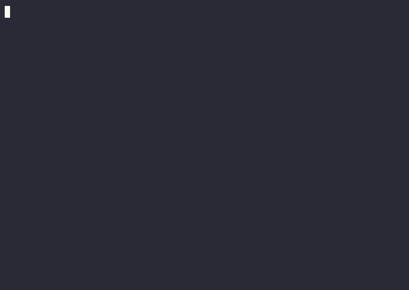
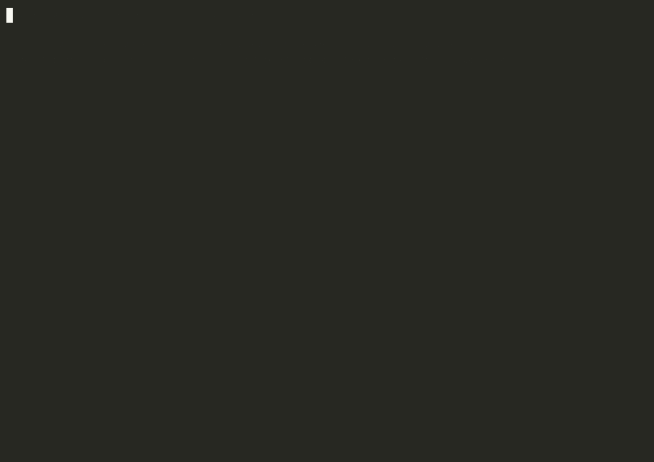
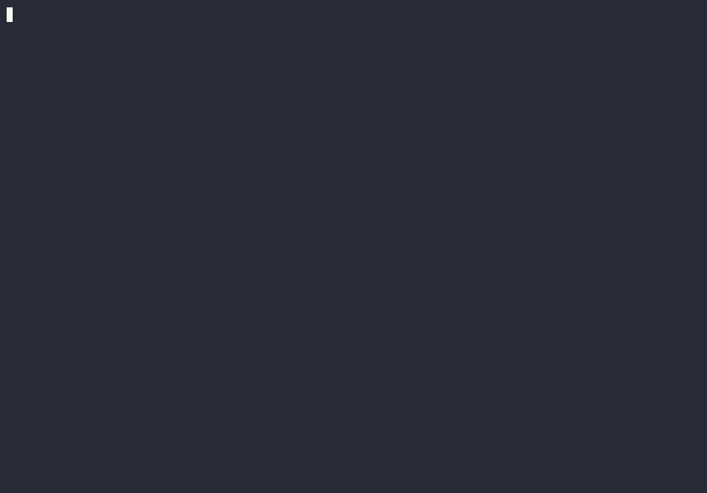

One binary · 13 agent CLIs
One manifest.
Every agent CLI.
Define your MCP servers, skills, and instructions once in
.agentstack/agentstack.toml. agentstack renders them into the
native config of 13 agent CLIs. Secrets stay references. Setups travel.
$ agentstack init
✓ imported 4 servers + 2 skills from your existing CLI configs
✓ lifted 2 inline tokens into ${REF}s # stored in your OS keychain
$ agentstack bootstrap
✓ claude-code · codex detected
⚠ secret GH_PAT unresolved ↳ agentstack secret set GH_PAT
$ agentstack apply
→ preview of every CLI's config changes … confirm to write
✓ rendered to claude-code, codex — backups taken, state tracked
Lost? Run agentstack with no arguments — it names the one next
step for the directory you're in.
Renders into the native config of
Install
curl -fsSL https://raw.githubusercontent.com/Tarekkharsa/agentstack/main/install.sh | sh
One static binary, no runtime dependencies. From a checkout:
cargo build --release && target/release/agentstack self link.
Getting started
From your current setup to every CLI
You don't start from a blank page. init reads the agent
config already on your machine and turns it into a manifest you can
review, commit, and share. (Nothing installed yet? init
writes a commented starter manifest instead — no dead ends on a clean
machine.)
-
agentstack init
Imports the servers and skills you already have; inline tokens become
${REF}s in your OS keychain. -
agentstack bootstrap
Preflight: which CLIs are installed, which skills and secrets are missing, what would change.
-
agentstack apply
Preview each CLI's config diff, confirm to write. Writes are atomic, backed up, and tracked —
restoreundoes them. -
agentstack doctor
Any time something feels off. Every warning names the exact fix command.

The manifest
One file, reviewed like code
version = 1
[servers.github]
type = "stdio"
command = "npx"
args = ["-y", "@modelcontextprotocol/server-github"]
env = { GITHUB_TOKEN = "${GH_PAT}" } # resolved per machine, never stored
[profiles.backend]
servers = ["github", "kibana"]
skills = ["sql-review"] # resolves from your central library
[targets]
default = ["claude-code", "codex"]
Secrets resolve locally — process env, varlock,
OS keychain, or .env — and unresolved secrets block writes,
so placeholders never leak into live config. A lockfile pins every skill
and server by digest; install --locked reproduces the setup
in CI.
The trust gate
Clone anything. Nothing runs until you say so.
Register the gateway once (agentstack connect --all --write)
and every repo you open brings its own servers — no files copied in. But
a repo you haven't reviewed is inert: none of its MCP
servers are spawned or contacted, no secrets resolved. You review what it
declares, trust it (pinned to a content digest of the
manifest and lockfile, so any later edit re-gates it), and from
then on every brokered call passes two firewall layers —
the repo's [policy.tools], and your own machine-level rules
that no repo can see, shadow, or loosen — and lands in the call log.
$ git clone some-repo && cd some-repo # declares servers you've never seen
$ agentstack mcp --auto-project # an agent asks: what can I touch here?
✗ untrusted — none of its servers are spawned or contacted
$ agentstack trust .
▶ demo: runs `python3 ./server.py` # you see exactly what it would run
✓ trusted at sha256:945b4b… # editing the manifest re-gates it
agent → demo.echo ✓ ok brokered through the gateway, logged
agent → demo.secret_read ✗ denied repo [policy.tools] firewall
agent → demo.delete_all ✗ denied YOUR machine policy — "*" = ["!delete_*"]
every call → ~/.agentstack/audit/calls.jsonl (tool · outcome · latency)
docs/trust-gate-demo.sh.
No vendor or agent framework tells this story: an untrusted repo's agents
can touch nothing you didn't review, and every capability call is
firewallable and logged. Prefer a drop-in proxy? --transparent
advertises every policy-filtered upstream tool straight in
tools/list, so any standard MCP client works with zero
agentstack knowledge — the default compact mode keeps them behind one
search tool so agent context stays small.
Rendered files
Pick where artifacts live
You always commit the intent (manifest + lock). The rendered artifacts
(.mcp.json, .claude/skills/) are a per-project choice:
- static default
- Artifacts (
.mcp.json,.claude/skills/, and the compiledCLAUDE.md/AGENTS.md) sit on disk, kept out of git by a managed.gitignoreblock that only ever covers files agentstack itself wrote — so a repo tracks only your.agentstack/intent and a hand-maintained file is never hidden. Works however you launch your tools. - clean-at-rest
- Nothing generated exists between sessions.
agentstack run <cli> --profile <p>injects on launch and reverts on exit;git statusstays silent. - zero files
- Nothing generated at all — the gateway serves each repo's servers on the fly, behind the trust gate above.
Teams & CI
Clone, bootstrap, done
git clone <repo>
agentstack bootstrap
agentstack secret set GH_PAT # local only; never committed
agentstack apply --writeIn CI, the trust gate is two commands — or the one-line GitHub Action:
agentstack install --locked # fail if sources drifted from the pinned lock
agentstack doctor --ci # fail on errors, drift, policy, unsafe contentGoing further
When you want more than the loop
Central library
One managed home for skills and servers; projects select by name and stay digest-pinned. Install from a local dir or a git subdirectory, sync across machines, and pull ready-made skills from the shipped catalog.
Visual walkthroughUsage insight
agentstack analyze reports what you actually call, from the
runtime audit log, and flags library skills and servers you installed but
never use — read-only and local, so pruning is data-driven.
Feature reference
The complete tested inventory: vendor packs, MCP firewall, call audit log,
optimize, plugin recipes, live runs, code mode, and the full
command list.
The no-terminal path
The whole lifecycle — discover, add, secrets, apply, verify, undo — from a local, token-gated dashboard, with read-only Proxy and Insights panels.
Dashboard guideVendor packs
agentstack add from git:github.com/acme/pack@v1.2.0 installs a
versioned MCP + skills + house-rules bundle — policy-gated and
content-scanned before anything is written.
Support any CLI, no rebuild
Each of the 13 agents is one data-driven YAML descriptor. Drop your own into
~/.agentstack/adapters/ to add or override a harness — validated
first, and a broken drop-in is skipped with a warning, never fatal.
